Hidrata profundamente
Ayuda a restaurar y retener la humedad natural de la piel.
Hidratación profunda y limpieza delicada para gatos con piel seca, sensible o con caspa. Sin aroma añadido.
Limpia sin dejar la piel tirante ni el pelo áspero.
Ayuda a restaurar y retener la humedad natural de la piel.
Avena coloidal y aloe vera ayudan a calmar sensibilidad y resequedad.
Humectantes y acondicionadores ayudan a conservar la piel flexible.
Combina tensioactivos suaves para retirar suciedad sin sensación áspera.
Polyquaternium-7 mejora el desenredo, el tacto y el brillo.
Una fórmula sin fragancia, pensada para el olfato sensible y el acicalamiento natural de los gatos.
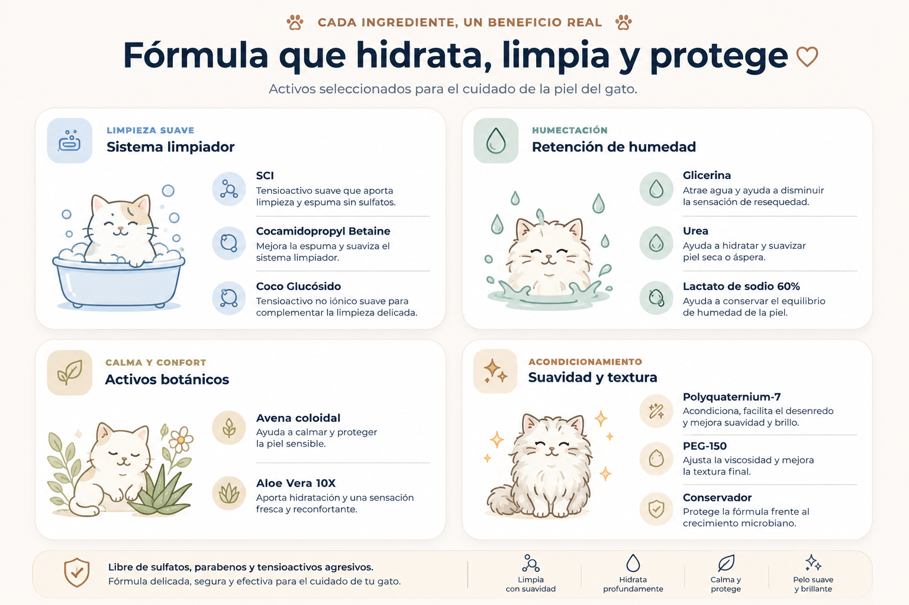
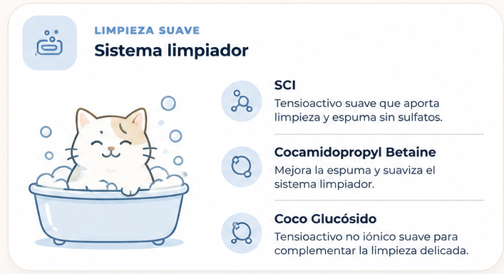
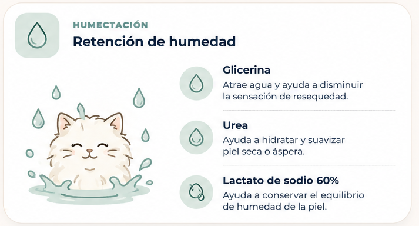
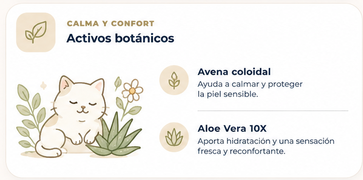
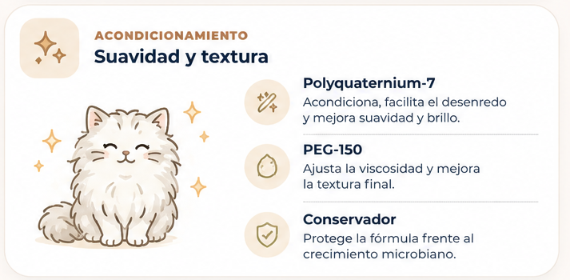
No solo quitamos sulfatos: construimos un sistema de limpieza realmente más delicado.
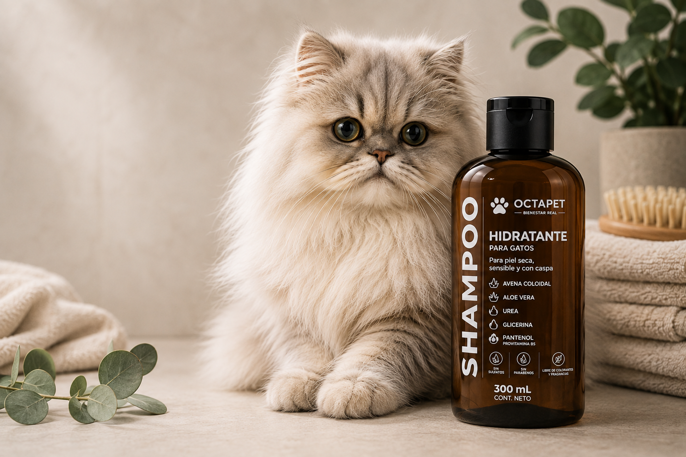
Por eso la fórmula no lleva aroma añadido. Limpia, hidrata y facilita el cepillado sin dejar una fragancia innecesaria sobre el pelo.
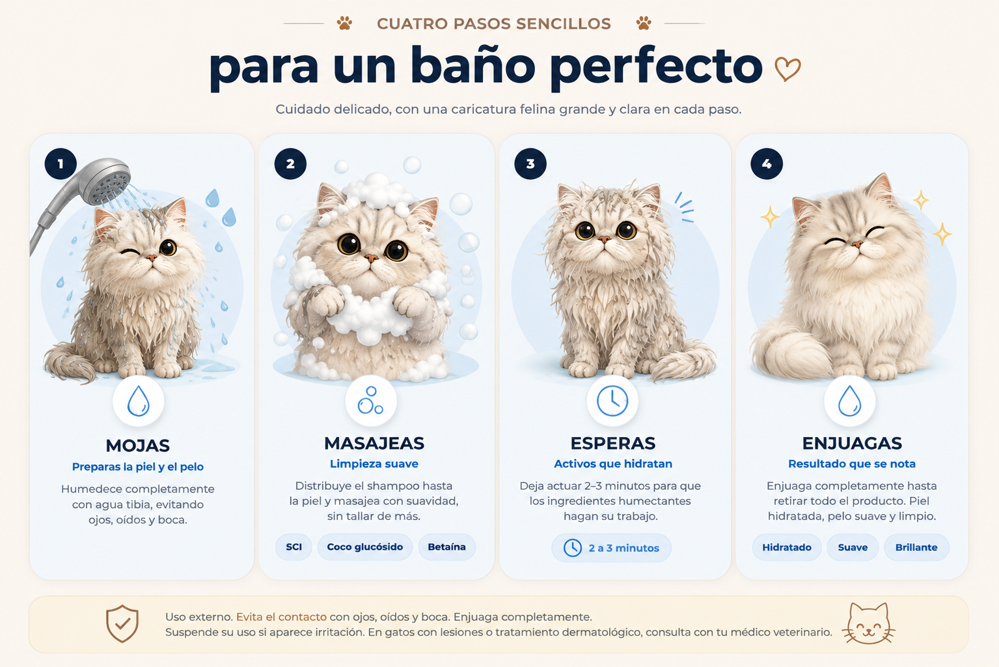
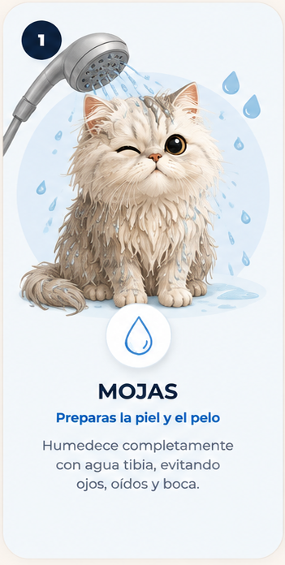
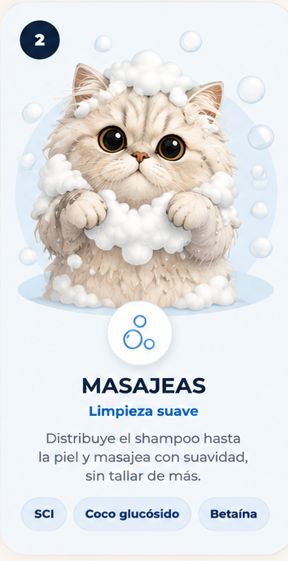
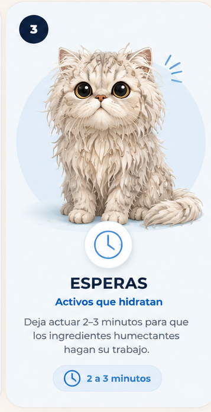
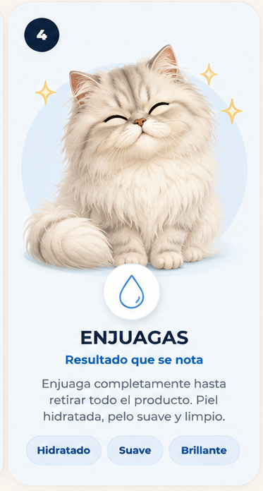
Conoce disponibilidad y próximos puntos de venta.